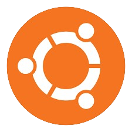

Unix Like Operating Systems:
Ubuntu
The common choice for Linux and greate for people new to the system. Has a great desktop enviroment.

Multimedia Programs:
Animation Programs:
Wick Editor
Midi Sequencing Programs: